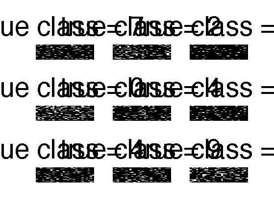

Visualize the MNIST digits and a version where we permute the pixels
loadData('mnistAll')
setSeed(0);
if 1
perm = randperm(28*28);
mnist.train_images = reshape(mnist.train_images, [28*28 60000]);
mnist.train_images = mnist.train_images(perm, :);
mnist.train_images = reshape(mnist.train_images, [28 28 60000]);
mnist.test_images = reshape(mnist.test_images, [28*28 10000]);
mnist.test_images = mnist.test_images(perm, :);
mnist.test_images = reshape(mnist.test_images, [28 28 10000]);
end
figure(1);figure(2);
for i=1:9
img = mnist.test_images(:,:,i);
y = mnist.test_labels(i);
figure(1);
subplot(3,3,i)
imagesc(img);colormap(gray); axis off
title(sprintf('true class = %d', y), 'fontsize', 55)
img2(perm) = img(:);
img2 = reshape(img2, [28 28]);
figure(2);
subplot(3,3,i)
imagesc(img2); colormap(gray); axis off
title(sprintf('true class = %d', y), 'fontsize', 55)
end
figure(1); printPmtkFigure('mnistTestShuffled');
figure(2); printPmtkFigure('mnistTestUnshuffled');
